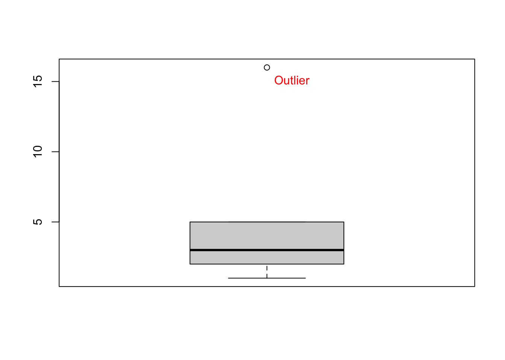
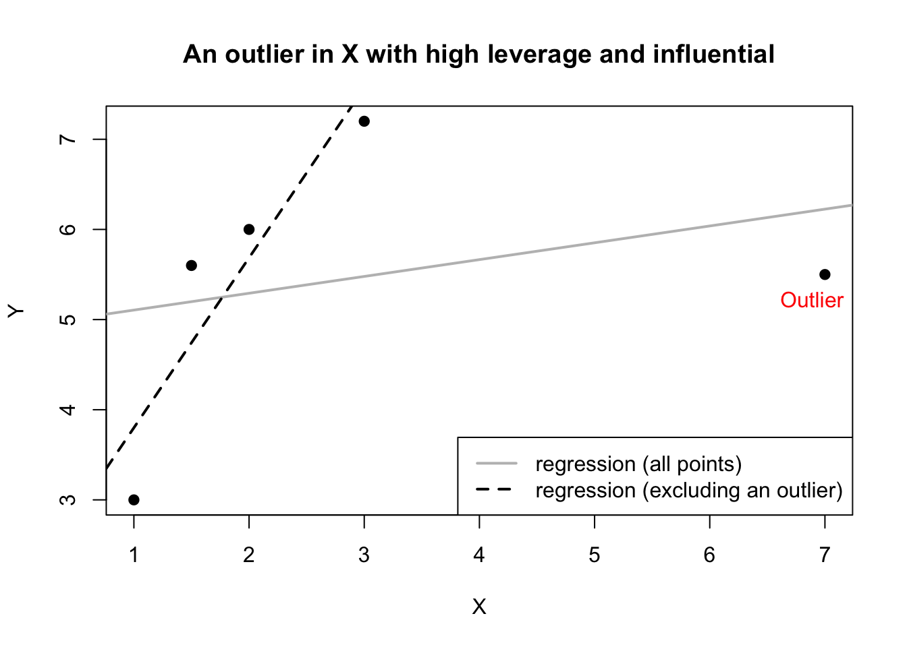
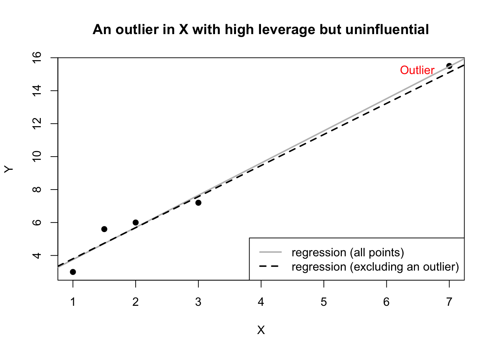

6 Influential Observations (to be deployed in the academic year of 2025/26)
Data: RobotGLP.sav; Influential1.sav
Data is available on ‘Workshop Materials’ folder on Moodle.
6.1 Learning objectives
The aim of this lab is to help you to use SPSS to identify influential observations.
Learning objectives:
At the end of this lab, I hope that you will
Understand the concept of outlier, leverage and influence.
Understand statistical measures used to detect influential observations.
Know how to use SPSS to detect influential observations.
6.2 The Foundation
6.2.1 Outlier
We have learned in the previous workshop that we can use a boxplot to detect outliers. These outliers are called univariate outliers because their values are either unusually low or extremely large compared to other values in that particular variable. For example, the number £16k in the following record of advertising spending – 1k, 2k, 3k, 5k, 16k —, is an outlier (see Figure 6.1). Outliers can occur due to human negligence, such as typing errors or sampling unexpected individuals (e.g., Bill Gates visiting Lancaster and taking part in a travel spending survey).
6.2.2 Leverage and Influence
In multiple regression that involves multiple independent variables, the concept of leverage is introduced to measure how unusual values in \(x\) are compared to the rest. Observations that are unusually low or high is considered to have a high leverage. Nevertheless, the combination of several X variables can produce a high-leverage observation, even if none of the X variables contain outliers. Leverage is a property of values in X only, not Y.
Important
Leverage refers to how far an observation’s \(x\)-values are from the mean of all \(x\)-values. The mean of \(x\)-values is calculated using all data point including the outliers’ \(x\)-values.
Observations with high leverage can pull the regression line toward themselves, even if their Y values are not univariate outliers.
The high-leverage observations can change the regression results (e.g., by altering coefficient estimates). Because of this, they are called influential observations.
Consider Figure 6.2. below:
X has an extreme value that is far from other values of \(x\) (hence it has a high leverage), yet the \(y\)-value associated with \(x\) is not extreme. Excluding this outlier from regression produce a regression line represented by the dash line in the figure. Including the outlier produces a regression line represented by a solid line, which is really different from the dash line as if the outlier pulls the dash line toward it. In this case the inclusion of the high-leverage point distorts the original regression line – line that includes all observations.

Note
In the SPSS language, observations are called cases. These are rows in your SPSS dataset. As majority of textbook and academic articles use observations instead of cases, I adopt the former terminology.
Now, consider Figure 6.3.
X has also a high leverage point associated with high Y value printed on the right side of the graph. With respect to \(x\), the point is far away from the rest. Similarly, with respect to \(y\), the point is far away from the rest of \(y\). However, the regression line with and without the outlier do not substantially differ. In this case, the high-leverage point is not influential because it does not distort the original regression line.

Important
Outliers are observations with high leverage because they are far from mean of all \(x\)-values but not all high-leverage observations are influential.
In a simple linear regression, we can use a scatter plot, as demonstrated in the two figures above, to visually inspect the potential present of influential observations. In multiple regression, this is not possible. Fortunately, there are statistical measures that we can use to detect influential observations. The most popular ones are Cook’s distance and DFBetas.
6.3 Measures of Influence
6.3.1 Cook’s distance
Cook’s distance was proposed by Cook (1977). It measures the difference between the fitted values obtained from regression with the full data and the fitted values obtained from regression by deleting a particular observation. Because fitted values are calculated using all regression coefficient estimates, the Cook’s distance also tells the difference between the regression coefficient estimates obtained from full data and the regression coefficient estimates obtained by deleting the particular observation. SPSS will calculate a Cook’s distance associated with each observation in a dataset.
Important
As a rule of thumb, an observation is considered influential if its Cook’s distance is greater than 1. Nevertheless, the rule is not strict, in practice, we need to look for observations with Cook’s distances that are much larger than those of the other observations (Chatterjee and Hadi, 2015).
A closely related measure to the Cook’s distance is DFITS, which is also frequently reported in an empirical work. DFITS is another name for Welsch and Kuh’s Measure. Both measures are available on SPSS. Because their values are identical, we can report only one of them.
6.3.2 DFBetas
The DFBetas (singular: DFBeta) assess the change in a regression coefficient when a particular observation is deleted. SPSS will calculate DFBetas for every observation. For each observation, the number of DFBetas produced by SPSS corresponds to the number of regression coefficients in the model. For example, in a simple regression model that contains two parameters (intercept and slope), SPSS will calculate two DFBetas, one for the intercept and one for the slope.
As a rule of thumb, an observation is considered influential if the absolute value of its DFBETAS exceeds 1 for small to medium datasets and \(\frac{2}{\sqrt(n)}\) for large datasets, where \(n\) is the sample size (Kutner, 2005).
6.4 Checking with SPSS
Data: Influential1.sav
For an illustration, we use the above data. I used this data to produce the first scatter plot presented earlier.
To calculate the Cook’s distance and DFbetas using SPSS, click Analyze\(\rightarrow\)Regression\(\rightarrow\)Linear. Enter the X and Y. Next, click Save. Under Distances, tick Cook's, and under Influence Statistics, tick DFBetas.

Now, click Continute and OK. Inspect the data view.

As we can see from the data view. Three new columns were added. First new column prints Cook’s distance for all observations. The Cook’s distances of the last observation is very large (14.934) while those of the remaining observations is smaller than 1. Next two columns are the DFBetas associated with the regression intercept (DFBO_1) and regression slope (DFB1_1) for all observations. For the last observation, its DFBO_1 is above 3 and its DFB1_1 is -1.699. Both are greater than 1 in an absolute term and very different than those of other observations. Using these information, we are confident that the last observation is an influential observation.
6.4.1 Omitting Influential Observations
Based on the results above, we can run regression by omitting influential observations. First, we need to select observations that are not influential. To do this, click Data\(\rightarrow\)Select Cases. Tick If condition is satisfied. Tick if. Next, enter COO_1 < 1 AND DFB0_1 < 1 AND DFB1_1 < 1 (see figure below), and click Continue.

Now, inspect the data view. As we can see from the data view, the last observation is crossed out, which means that it is not included in subsequent analysis. Now, we can run regression as usual.

Task
Use RobotGLP.sav to inspect influential observations in this regression model:
Intention to join the green LP = \(\beta_0\) Anticipated Guilt + \(\beta_1\) Perceived Attractiveness + \(\beta_2\) Age + \(\beta_3\) Gender + error.
6.5 References
Chatterjee, S., & Hadi, A. S. (2015). Regression analysis by example. John Wiley & Sons.
Kutner, M. H., Nachtsheim, C. J., Neter, J., & Li, W. (2005). Applied linear statistical models. McGraw-hill.